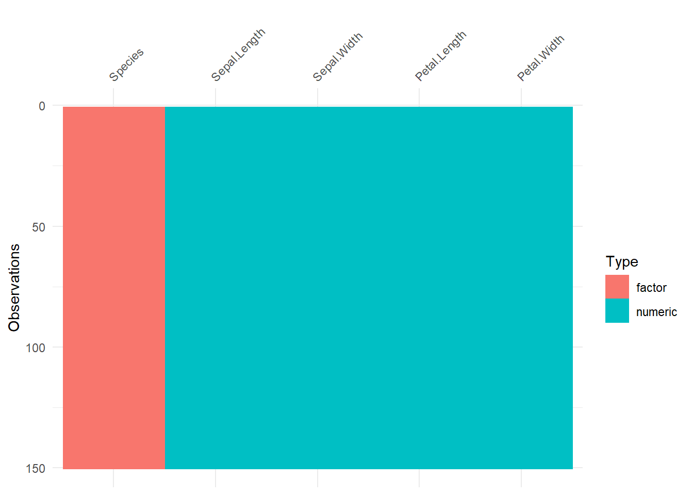
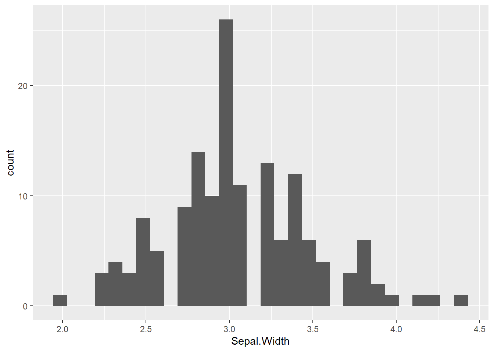
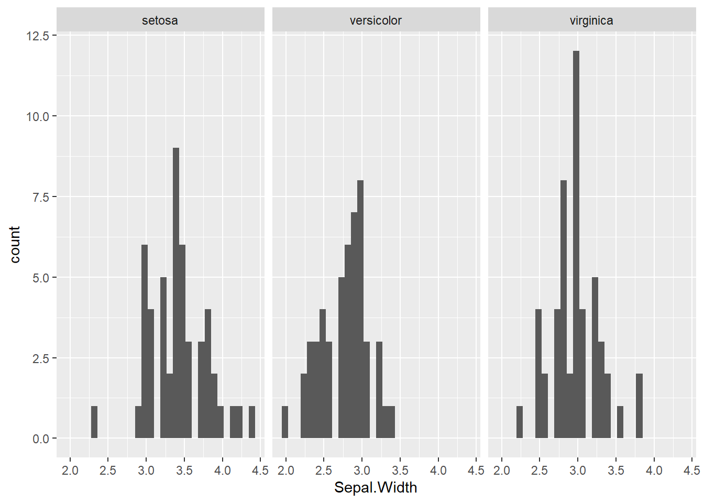
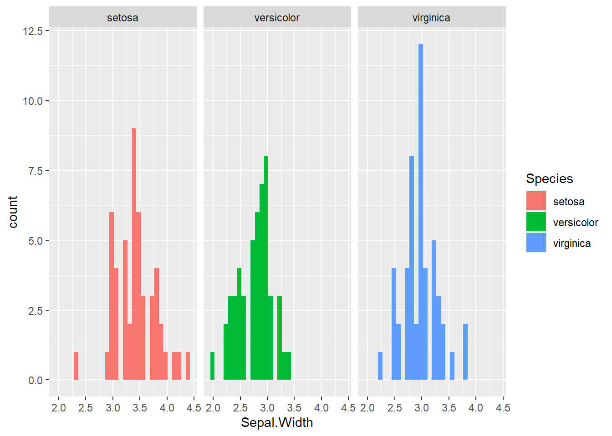
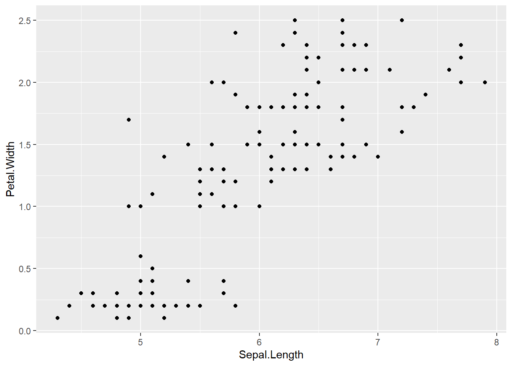
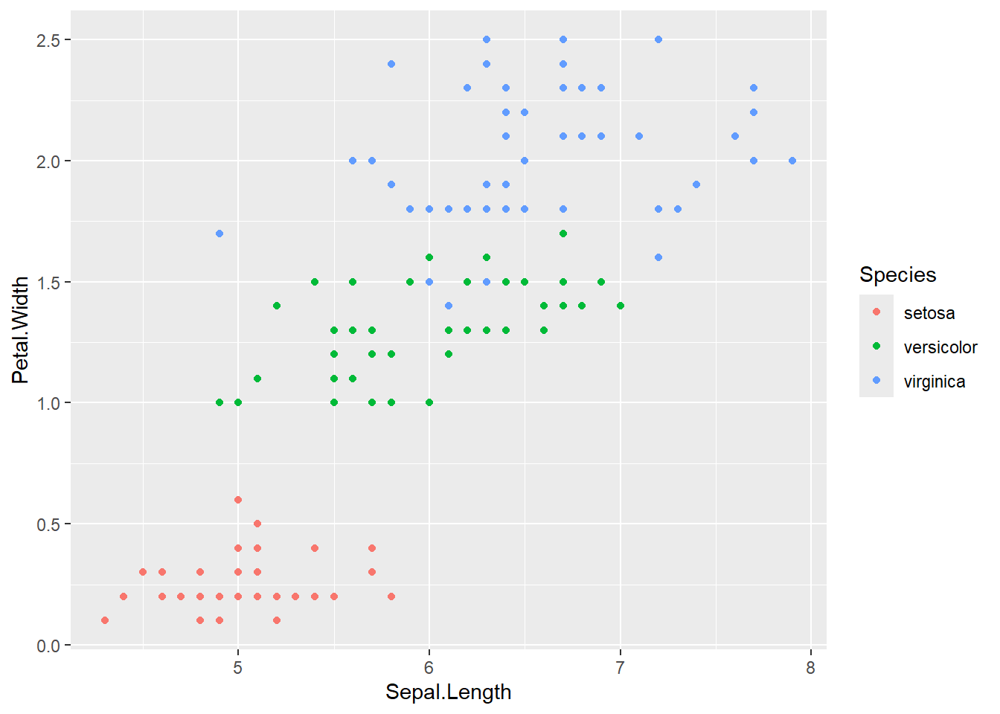
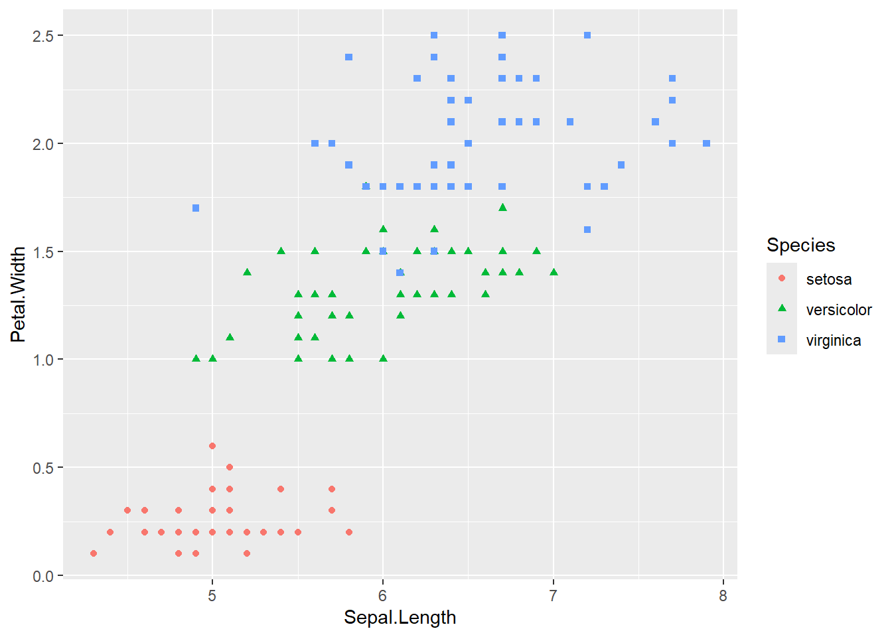
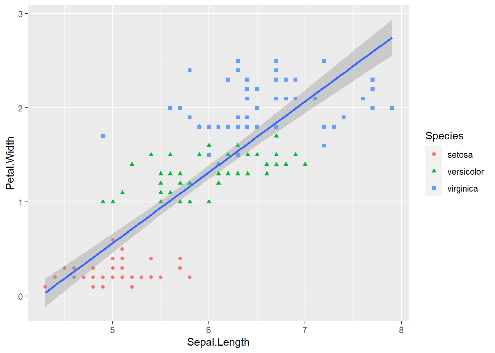
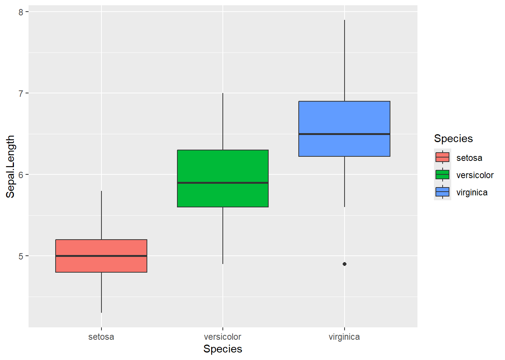
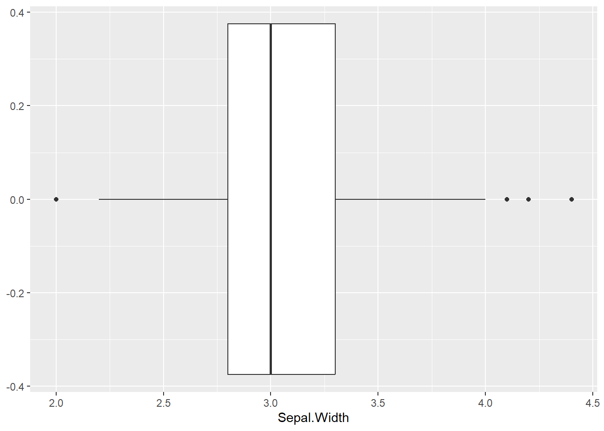

library(tidyverse)
library(datasets)
library(visdat)7 Fallstudie zur explorativen Datenanalyse anhand des Iris-Datensatzes
Diese Fallstudie soll als Einführung in die explorative Datenanalyse mit angewandtem Datenjudo und Datenvisualisierung dienen. Es geht darum, sich einen Überblick über den Datensatz zu verschaffen und gegebenenfalls einige Umformungen vorzunehmen, um später vernünftig damit arbeiten zu können. Der Datensatz enthält Messungen der Länge und Breite der Blüten-(Sepal) und Kelchblätter(Petal) von drei verschiedenen Spezies der Iris.

7.1 Packages laden
7.2 Datenimport
data(iris)
view(iris)7.3 Datenjudo
7.3.1 Datensatz auf fehlende Daten prüfen
iris %>%
summarise((across(everything(),~sum(is.na(.x)))))Wir sehen: Es gibt in keiner Spalte fehlende Werte. Das heißt, wir brauchen uns darüber schon einmal keine Gedanken zu machen.
7.3.2 Überblick über die Variablentypen
Wir können uns einen Überblick über die verschiedenen Variablentypen verschaffen, indem wir uns für jede Variable ihren Typ ausgeben lassen.
iris %>%
sapply(class)Sepal.Length Sepal.Width Petal.Length Petal.Width Species
"numeric" "numeric" "numeric" "numeric" "factor" Wir sehen nun, dass alle Variablen numerisch skaliert sind, außer Species, welches eine Faktorvariable ist.
7.4 Datenvisualisierung
7.4.1 Überblick über die Variablentypen
Mit dem Befehl vis_dat können wir uns alternativ zu sapply auch noch einen graphischen Überblick über die Variablen verschaffen. Sollte es NA’s geben, wären diese auch ungefähr zu sehen.
visdat::vis_dat(iris)
7.4.2 Verteilungen
Es kann sinnvoll sein, sich die Verteilungen der Variablen anzusehen, da je nach Verteilung weitere Aktionen notwendig sein können, um mit den Variablen sinnvoll zu arbeiten. Dazu aber bald mehr. Beispielsweise erstellen wir hier ein Histogramm für Sepal.Width mit ggplot, indem wir der x-Achse Sepal.Width zuweisen und den geomtyp mit geom_histogram festlegen.
ggplot(iris, aes(x = Sepal.Width)) +
geom_histogram()`stat_bin()` using `bins = 30`. Pick better value with `binwidth`.
Man sieht, dass diese Verteilung einer Normalverteilung recht nahe kommt. Mit diesem Plot haben wir uns jetzt die Blütenbreite aller Spezies insgesamt angeschaut. Wir können uns aber auch die Verteilung für jede Spezies separat anzeigen lassen. Das geht mit der Funktion facet_wrap.
ggplot(iris, aes(x = Sepal.Width)) +
geom_histogram() +
facet_wrap(~Species)`stat_bin()` using `bins = 30`. Pick better value with `binwidth`.
Jetzt sehen wir alle spezifischen Verteilungen nebeneinander in einer Reihe. Wenn wir die Diagramme auch noch unterschiedlich einfärben wollen, müssen wir innerhalb einer aes-Funktion noch die Spezies für die Füllung definieren. Das sieht dann folgendermaßen aus:
ggplot(iris, aes(x = Sepal.Width, fill = Species)) +
geom_histogram() +
facet_wrap(~Species)`stat_bin()` using `bins = 30`. Pick better value with `binwidth`.
7.4.3 Scatterplots
Um zu sehen, wie die Werte zweier numerischer Variablen im Verhältnis zueinander aussehen, kann man Scatterplots erstellen. Hierzu legt man für die x und y-Achse die entsprechenden Variablen fest und definiert den geomtyp geom_point.
ggplot(iris, aes(x = Sepal.Length, y = Petal.Width)) +
geom_point()
Diesem Scatterplot können wir noch mehr Informationsgehalt verleihen, indem wir mehr Argumente hinzufügen. Beispielsweise wäre es interessant zu wissen, ob die verschiedenen Spezies unterschiedlich lange und breite Blütenblätter haben. Das können wir herausfinden, indem wir die Punkte, die die gleiche Spezies aufweisen auch mit der gleichen Farbe versehen. Wir fügen also wieder unseren aesthetics-Befehl ein, indem wir die Farbe der Punkte die Variable species zuweisen.
ggplot(iris, aes(x = Sepal.Length, y = Petal.Width)) +
geom_point(aes(color = Species))
Aha! Es ist nun ganz deutlich zu erkennen, dass die unterschiedlichen Spezies auch unterschiedlich lange und breite Blütenblätter haben. Dies können wir noch deutlicher hervorheben, wenn wir für jede Spezies auch eine andere Form wählen.
ggplot(iris, aes(x = Sepal.Length, y = Petal.Width)) +
geom_point(aes(color = Species,
shape = Species))
Die Verteilung der Werte im Scatterplot legt nahe, dass ein Blütenblatt, dass ein kurzes Blütenblatt hat eher schmal ist und ein längeres Blütenblatt entsprechend breiter. Diese lineare Beziehung kann noch verdeutlicht werden, indem man eine Gerade über die Punktewolke legt, die dem generellen Trend folgt. Dazu fügt man noch die Funktion geom_smooth hinzu und spezifiziert mit method = lm, dass wir eine Gerade möchten.
ggplot(iris, aes(x = Sepal.Length, y = Petal.Width)) +
geom_point(aes(color = Species,
shape = Species)) +
geom_smooth(method = lm)`geom_smooth()` using formula = 'y ~ x'
7.4.4 Boxplots
Den Fakt, dass die unterschiedlichen Spezies unterschiedlich große Blüten haben, können wir noch deutlicher visualisieren, indem wir Boxplots erstellen. Hier legen wir den geomtyp auf geom_boxplot fest und geben an, dass die Füllung sich an den Spezies orientieren soll.
ggplot(iris, aes(x = Species, y = Sepal.Length)) +
geom_boxplot(aes(fill = Species))
7.5 Daten umformen
Mit den verschiedenen Plots konnten wir uns bis jetzt einen ganz guten Überblick über die Daten verschaffen. Nun widmen wir uns wieder den Daten und versuchen die weiterhin etwas zu optimieren.
Bei Betrachtung einiger Plots kann man bereits erkennen, dass es in dem Datensatz vereinzelt Extremwerte bei den einzelnen Variablen gibt, die das Gesamtbild verfälschen.
Diese Extremwerte wollen wir nun ausmachen und aus dem Datensatz entfernen.
7.5.1 Die Boxplot Methode
Gängig ist es, dass man Extremwerte mit der Boxplot Methode ausmacht. Diese besagt, dass jeder Wert der über dem Ergebnis der Formel:
75 Quantile + 1.5 * IQR | 25 Quantile - 1.5 * IQR
liegt als Extremwert zu sehen ist. Wir werden hier diese Grenzwerte mal für die Variable Sepal.Width bestimmen:
Bestimmung des 75 Quantils und des 25 Quantils :
iris %>%
summarise(q75 = quantile(Sepal.Width,
prob = .75,
na.rm = TRUE),
q25 = quantile(Sepal.Width,
prob = .25,
na.rm = TRUE))Bestimmung des IQRs:
iris %>%
summarise(IQR_SW = IQR(Sepal.Width))Einsetzen in die Formel:
Grenzwerte = c(3.3 + 1.5 * 0.5, 2.8 - 1.5 * 0.5)Jeder Wert der Variable Sepal.Width, der größer als 4.05 oder kleiner als 2.05 ist, kann also als Extremwert betrachtet werden.
Schauen wir mal, wie viele es davon gibt:
iris %>%
count(Sepal.Width > 4.05 | Sepal.Width < 2.05)Jetzt wissen wir, dass es vier Extremwerte gibt.
7.5.2 Boxplot erstellen
Diese können wir uns auch anhand eines Boxplots anzeigen lassen. Das ist immer praktisch, um überhaupt erst einmal zu überprüfen, ob es denn Extremwerte für eine Variable gibt.
ggplot(iris, aes(Sepal.Width)) +
geom_boxplot()
Generell ist es zum Überprüfen auf Extremwerte auch hilfreich, zunächst einmal Boxplots zu erstellen.
7.5.3 Extremwerte in NA´s umwandeln
Immerhin 3 Extremwerte haben wir also. Diese löschen wir nun aus dem Datensatz, indem wir sie in NA´s umwandeln.
Dies ist mit diesen Befehlen möglich:
iris.we <-
iris %>%
mutate(Sepal.Width.we = replace(.$Sepal.Width, .$Sepal.Width > 4.05 | .$Sepal.Width < 2.05,
NA)) Mit dem Befehl Mutate haben wir hier eine neue Spalte Sepal.Width.we erschaffen, die alle Daten von Sepal.Width außer die Extremwerte enthält.
Mit den Werten aus dieser Spalte können wir dann ganz normal arbeiten wie mit den anderen vorher auch.
Um zu überprüfen, ob alles funktioniert hat, checken wir nochmal, wie viele fehlende Werte es jetzt in dem neuen Datensatz gibt und ob es Werte über dem mit der Boxplot Methode gewählten Grenzwert gibt.
# Fehlende Werte?
iris.we %>%
summarise((across(everything(),~sum(is.na(.x)))))# Werte über dem Grenzwert?
iris.we %>%
count(Sepal.Width.we > 4.05 | Sepal.Width.we < 2.05)Wir sehen, dass alles funktioniert hat. In dem neuen Datensatz gibt es keine Werte mehr für die Variable, die wir vorher mit der Boxplot Methode als Extremwerte definiert haben.
7.6 Abschluss
Nun haben wir einen ganz guten Eindruck vom iris-Datensatz bekommen und bereits erste Optimierungen am Datensatz vorgenommen. Einer weiteren Analyse steht nichts mehr im Weg.